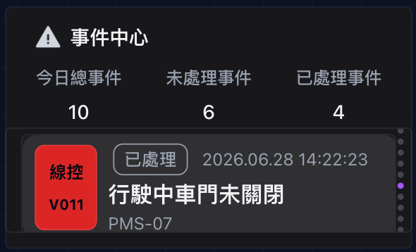

事件中心 固定面板 + 事件輪播 · 點標題可摺疊整區

refreshMode: event。
後端收到 MQTT 後寫入 PostgreSQL 資料表，再經 Socket.IO 推送
datasource_invalidate（標籤 domain:event_center、table:security_event_log），前端重查 SQL。
程式：demoPlane.ts · demoSql.ts · mqtt.controller.ts
本模組使用的資料表：security_event_logs
Entity：backend/src/database/entities/security-event-log.entity.ts · 資料來源 default-internal（PostgreSQL）
| 欄位 | 型別 / 說明 | 本模組用途 |
|---|---|---|
event_id | PK · EVT-YYYYMMDD-XXXX | 輪播群組 slotKeyField、列唯一鍵 |
vehicle_code | varchar | 事件卡車輛編號；MQTT topic 中的車號寫入此欄 |
event_code | enum（如 PATH_BLOCKED） | 寫庫來源；message 後備顯示 |
severity | enum · INFO / WARNING / CRITICAL | 左色條著色 |
created_at | bigint（毫秒） | KPI / 列表時間篩選；轉成 event_time 顯示 |
category_label | varchar，可空 | 顯示為 category（預設「線控」） |
display_message | text，可空 | 主標 message 優先來源 |
detail | text，可空 | message 次選來源 |
sub_label | varchar，可空 | 副標；空則 fallback vehicle_code |
is_acknowledged | boolean | KPI 已/未處理計數；status_label、未讀圓點 |
location · params | jsonb，可空 | 本模組 UI 未直接顯示 |
寫入來源：MQTT v1/vtms/{vehicle_code}/event/report（handleEventReport）；健康劣化時後端自動插入 SYSTEM_HEALTH_DEGRADED（recordHealthDegradedEvent）。
固定面板 · KPI 區（Canvas 330×196 px）
text模組標題「事件中心」
版面參數
| 位置 / 尺寸 | x:12 y:12 w:274 h:24 |
|---|---|
| content | 事件中心 |
| fontSize | 16 |
| color | #F3F4F6 |
| fontWeight | bold |
| lineHeight | 1.25 |
| iconImage | /dashboard-icons/alerts/event_center.png |
資料表
無 — 靜態文字，不查詢資料庫。
SQL
無 — 靜態文字，不綁資料來源。
MQTT
無 — 不參與即時更新。
stat-card今日總事件
版面參數
| 位置 / 尺寸 | x:12 y:42 w:94 h:54 |
|---|---|
| label | 今日總事件 |
| valueField | total_events |
| labelPosition | top |
| contentAlign | left |
| labelColor / valueColor | #99A1AF / #F3F4F6 |
| labelFontSize / valueFontSize | 14 / 16 |
| dataSourceId | default-internal |
| refreshMode | event（refreshInterval: 0） |
資料表
| 主表 | security_event_logs |
|---|---|
| 聚合欄位 | total_events = COUNT(*) |
| 時間篩選 | created_at ≥ 過去 7 天（毫秒） |
| 元件取值 | valueField: total_events |
SQL
SELECT COUNT(*)::int AS total_events, COUNT(*) FILTER (WHERE NOT COALESCE(is_acknowledged, false))::int AS unprocessed_events, COUNT(*) FILTER (WHERE COALESCE(is_acknowledged, false))::int AS processed_events FROM security_event_logs WHERE created_at >= (EXTRACT(EPOCH FROM (NOW() - INTERVAL '7 days')) * 1000)::bigint
常數名 EVENT_CENTER_SUMMARY_SQL（三張 KPI 卡共用同一查詢，各取不同 valueField）。
MQTT / 更新觸發
- 失效標籤：
domain:event_center·table:security_event_log - 上游 MQTT → 寫庫 → 重查：
v1/vtms/{vehicle_code}/event/report - 健康劣化自動建事件：
v1/vtms/{vehicle_code}/health/heartbeat（SYSTEM_HEALTH_DEGRADED） - 推送通道：Socket.IO
datasource_invalidate（reason:security_event）
stat-card未處理事件
版面參數
| 位置 / 尺寸 | x:118 y:42 w:94 h:54 |
|---|---|
| label | 未處理事件 |
| valueField | unprocessed_events |
| 其餘樣式 | 同「今日總事件」 |
資料表
| 主表 | security_event_logs |
|---|---|
| 聚合欄位 | unprocessed_events = COUNT(*) FILTER (WHERE NOT is_acknowledged) |
| 時間篩選 | created_at ≥ 過去 7 天 |
SQL
同 EVENT_CENTER_SUMMARY_SQL，取欄位 unprocessed_events（security_event_logs.is_acknowledged = false 計數）。
MQTT
同 KPI 共用觸發鏈（見上）。
stat-card已處理事件
版面參數
| 位置 / 尺寸 | x:224 y:42 w:94 h:54 |
|---|---|
| label | 已處理事件 |
| valueField | processed_events |
| 其餘樣式 | 同「今日總事件」 |
資料表
| 主表 | security_event_logs |
|---|---|
| 聚合欄位 | processed_events = COUNT(*) FILTER (WHERE is_acknowledged) |
| 時間篩選 | created_at ≥ 過去 7 天 |
SQL
同 EVENT_CENTER_SUMMARY_SQL，取欄位 processed_events（security_event_logs.is_acknowledged = true 計數）。
MQTT
同 KPI 共用觸發鏈（見上）。
群組 · 事件輪播（scroll · 雙畫板 · Canvas 330×84 範本）
canvas群組設定（事件輪播）
群組參數
| label | 事件輪播 |
|---|---|
| groupRepeatMode | scroll（每 groupScrollInterval: 4 秒切換） |
| slotKeyField | event_id |
| variableName | item（索引變數，範本內用 {item}） |
| groupVariableMode | index |
| templateWidth × Height | 306 × 84 |
| dualCanvasEnabled | true |
| childrenNormal | 有資料時的事件卡範本（9 元件） |
| childrenDefault | 無資料時 empty-state 預設畫板 |
| displayGate | rowCount ≥ 1 → 顯示常態範本，否則預設畫板 |
| dataSourceId | default-internal |
| refreshMode | event |
資料表
| 主表 | security_event_logs |
|---|---|
| 列表鍵 | event_id（slotKeyField） |
| 排序 | ORDER BY created_at DESC |
| 筆數上限 | LIMIT 12（輪播索引 {item} = 0…11） |
| 時間篩選 | created_at ≥ 過去 7 天 |
SQL（列表 · 驅動輪播列數）
SELECT event_id, COALESCE(category_label, '線控') AS category, vehicle_code, CASE WHEN COALESCE(is_acknowledged, false) THEN '已處理' ELSE '尚未處理' END AS status_label, to_char(to_timestamp((created_at::bigint) / 1000.0), 'YYYY.MM.DD HH24:MI:SS') AS event_time, COALESCE(display_message, detail, event_code::text) AS message, COALESCE(sub_label, vehicle_code) AS sub_label, COALESCE(is_acknowledged, false) AS is_acknowledged, severity::text AS severity FROM security_event_logs WHERE created_at >= (EXTRACT(EPOCH FROM (NOW() - INTERVAL '7 days')) * 1000)::bigint ORDER BY created_at DESC LIMIT 12
常數名 EVENT_CENTER_LIST_SQL。輪播索引 {item} = 0…11。
MQTT / 更新觸發
- 同 KPI 區 — 新事件寫入
security_event_logs後整組列表重查 - MQTT 上報：
v1/vtms/{vehicle_code}/event/report - Payload 必填：
event_id（EVT-YYYYMMDD-XXXX）、event_code、severity - 另廣播 Socket.IO
security_event（供其他模組，本群組以 SQL 重查為主）
下列範本元件皆查詢同一資料表 security_event_logs，以 OFFSET {item} 取列表第 N 筆。
color-block卡片背景
參數
| 尺寸 | 填滿範本 306×84 |
|---|---|
| backgroundColor | rgba(212, 212, 216, 0.1) |
| borderRadius | 12 |
資料表
無 — 純裝飾，不查 security_event_logs。
SQL / MQTT
無 — 純裝飾底色。
color-block左側嚴重度色條
參數
| severityStripColor | true（依 severity 自動著色） |
|---|---|
| 預設色 | #FB2C36 |
| valueField | （色條由 SQL 的 severity 驅動） |
| refreshMode | event |
資料表
| 主表 | security_event_logs |
|---|---|
| 欄位 | severity → 元件色條（INFO / WARNING / CRITICAL） |
SQL
SELECT severity
FROM ( … EVENT_CENTER_LIST_SQL … ) AS __rows
LIMIT 1 OFFSET GREATEST(0, COALESCE({item}, 0)::int)
MQTT
間接 — 事件上報 payload 的 severity 寫庫後重查。
text事件類別 category
參數
| valueField | category |
|---|---|
| fontSize / color | 14 · #030712 · bold |
| 位置 | 左色條內上方（置中） |
資料表
| 主表 | security_event_logs |
|---|---|
| 欄位 | category_label → SQL 別名 category（空則顯示「線控」） |
SQL
SELECT category FROM ( … EVENT_CENTER_LIST_SQL … ) AS __rows
LIMIT 1 OFFSET GREATEST(0, COALESCE({item}, 0)::int)
來源欄 COALESCE(category_label, '線控')。
MQTT
間接 — 由後端寫入事件紀錄後重查。
text車輛編號 vehicle_code
參數
| valueField | vehicle_code |
|---|---|
| fontSize / color | 14 · #030712 · bold |
| 位置 | 左色條內下方（置中） |
資料表
| 主表 | security_event_logs |
|---|---|
| 欄位 | vehicle_code |
SQL
SELECT vehicle_code FROM ( … EVENT_CENTER_LIST_SQL … ) AS __rows
LIMIT 1 OFFSET GREATEST(0, COALESCE({item}, 0)::int)
MQTT
Topic 中的 {vehicle_code} 即此欄來源。
status-badge狀態標籤 status_label
參數
| valueField | status_label |
|---|---|
| badgeStyle | outline |
| badgeVariant | compact |
| outlineBorderColor | #99A1AF |
| defaultLabel | — |
| showDot | false |
資料表
| 主表 | security_event_logs |
|---|---|
| 欄位 | is_acknowledged → SQL 衍生 status_label（尚未處理 / 已處理） |
SQL
SELECT status_label FROM ( … EVENT_CENTER_LIST_SQL … ) AS __rows
LIMIT 1 OFFSET GREATEST(0, COALESCE({item}, 0)::int)
值：尚未處理 / 已處理（由 security_event_logs.is_acknowledged 衍生）。
MQTT
間接 — 確認狀態目前由資料表欄位決定，非 MQTT 直送。
text事件時間 event_time
參數
| valueField | event_time |
|---|---|
| textAlign | right |
| color | #99A1AF |
資料表
| 主表 | security_event_logs |
|---|---|
| 欄位 | created_at（bigint 毫秒）→ 格式化為 event_time |
SQL
SELECT event_time FROM ( … EVENT_CENTER_LIST_SQL … ) AS __rows
LIMIT 1 OFFSET GREATEST(0, COALESCE({item}, 0)::int)
格式 YYYY.MM.DD HH24:MI:SS，由 security_event_logs.created_at 轉換。
MQTT
間接 — 上報 payload 的 timestamp 寫入 created_at。
text未讀圓點 dot
參數
| valueField | dot |
|---|---|
| content 規則 | 未處理 → ●；已處理 → 空字串（元件自動隱藏） |
| color | #51A2FF |
| fontSize | 8 |
資料表
| 主表 | security_event_logs |
|---|---|
| 欄位 | is_acknowledged → 未確認顯示 ●，已確認為空 |
SQL
SELECT CASE WHEN COALESCE(is_acknowledged, false) THEN '' ELSE '●' END AS dot
FROM ( … EVENT_CENTER_LIST_SQL … ) AS __rows
LIMIT 1 OFFSET GREATEST(0, COALESCE({item}, 0)::int)
MQTT
間接 — 同 status_label。
text主標題 message
參數
| valueField | message |
|---|---|
| fontSize | 18（headline） |
| color / fontWeight | #F3F4F6 · bold |
| textWrap | nowrap |
資料表
| 主表 | security_event_logs |
|---|---|
| 欄位（優先序） | display_message → detail → event_code |
| SQL 別名 | message |
SQL
SELECT message FROM ( … EVENT_CENTER_LIST_SQL … ) AS __rows
LIMIT 1 OFFSET GREATEST(0, COALESCE({item}, 0)::int)
來源 COALESCE(display_message, detail, event_code::text)；後端依 event_code 解析中文 display_message。
MQTT
上游 event/report payload：event_code、detail → 後端 resolveEventDisplayMessage()。
text副標 sub_label
參數
| valueField | sub_label |
|---|---|
| fontSize / color | 14 · #99A1AF |
資料表
| 主表 | security_event_logs |
|---|---|
| 欄位 | sub_label（空則 fallback vehicle_code） |
SQL
SELECT sub_label FROM ( … EVENT_CENTER_LIST_SQL … ) AS __rows
LIMIT 1 OFFSET GREATEST(0, COALESCE({item}, 0)::int)
來源 COALESCE(sub_label, vehicle_code)。
MQTT
間接 — 由 DB 欄位重查。
empty-state尚無事件（預設畫板）
參數
| label | 尚無事件 |
|---|---|
| emptyStateVariant | minimal-center |
| labelFontSize | 同輔助字級 |
| 顯示條件 | 群組 displayGate：列表 rowCount < 1 |
資料表
不直接查表；當 security_event_logs 在 7 天窗口內無列時，群組改顯示此預設畫板。
SQL
無 — 預設畫板不綁查詢；由群組列表是否為空決定顯示。
MQTT
無直接綁定；列表從有筆 → 0 筆時自動切換到此畫板。